2026年09月19日 BRM919 新潟 1000 よしおか 新潟いわき海岸線 DNF
PBPの優先エントリー権が取れるのでエントリーしていた1000kmなのだが、関東地方には台風が接近する予報。
とりあえずスタート地点には行ってスタートしたのだが、予想を超える雨と強風で3日目の720km地点でリタイア。
| 区間 | 地点 | 距離(km) | 到着時刻 |
|---|---|---|---|
| スタート | 道の駅よしおか温泉 | 0.0 | 09/19 13:00 |
| PC1 | セブンイレブン 長岡南中央通り店 | 153.5 | 09/19 19:32 |
| 通過チェックA | デイリーヤマザキ 新潟美咲町店 | 219.5 | 09/20 06:12 |
| 通過チェックB | ファミリーマート 鶴岡大山店 | 359.8 | 09/20 13:24 |
| 通過チェックC | 東松島市震災復興伝承館 | 524.7 | 09/20 21:41 |
| 通過チェックD | 鵜ノ尾岬 | 610.0 | 09/21 09:01 |
| 通過チェックE | 三崎公園第一駐車場 いわきマリンタワー | 718.5 | 09/21 14:47 |
| 通過チェックF | ファミリーマート 棚倉町近津店 | 792.6 | - |
| 通過チェックG | ファミリーマート さくら氏家店 | 872.7 | - |
| PC2 | セブンイレブン 桐生梅田1丁目店 | 969.0 | - |
| フィニッシュ | 道の駅よしおか温泉 | 1004.7 | - |
1日目 (スタート - 185km地点)
高崎線の新前橋行に乗車して輪行し、終点の新前橋で輪行解除してスタート地点まで8kmほど走行。
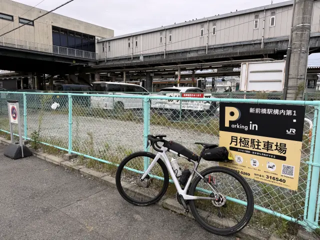
到着後に道の駅の売店で昼ご飯を食べて補給をしてから、受付を済ませてブリーフィング。
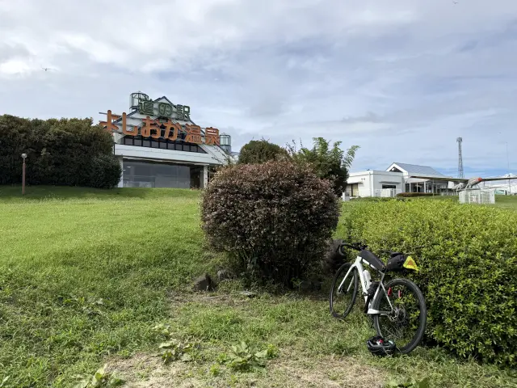
ブリーフィング後に車検を受けてスタート。
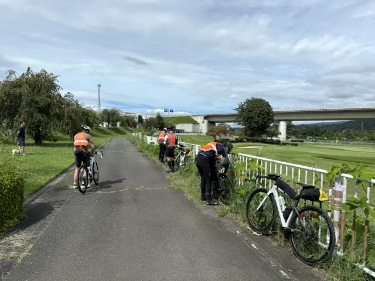
スタートからしばらく国道17号をひたすら登るだけ。
SR600北関東でも寄った三国峠手前最後のコンビニで休憩。
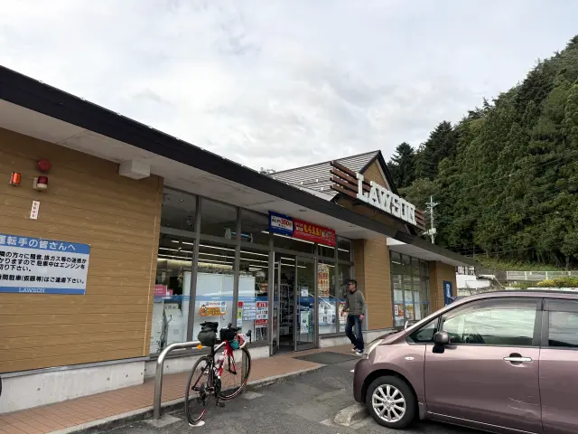
2ヶ月弱ぶりの三国峠。今回は脚がフレッシュだったのでだいぶ楽だった。
途中、スタート地点では見ない反射ベストを着たライダーがいたので抜きざまに訊いてみたところ、A埼玉の1000kmとのこと。だいぶコースが似ているらしい。
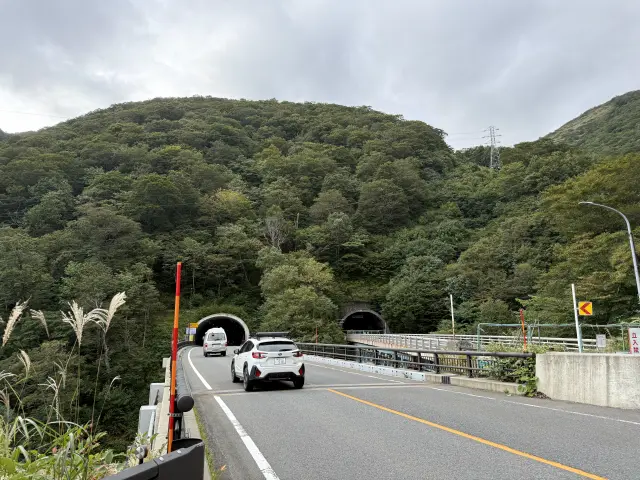
1日目は185kmしかないこともあり、A埼玉の参加者と会話しつつ快調に飛ばす。
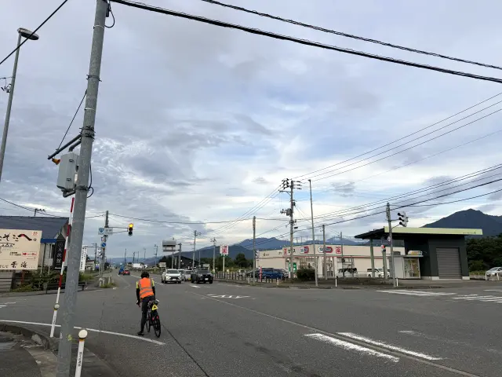 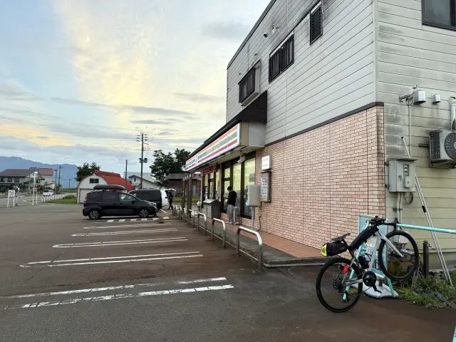
日が暮れると(特に川沿いでは)ライトに大量の虫が…
少しでも口を開けようものなら入ってくるので、鼻呼吸で。
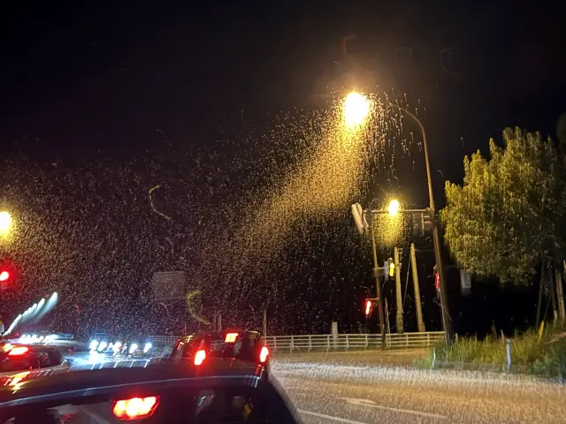
153kmのPC1に到着。ここは埼玉でもPCに設定されていたらしい。
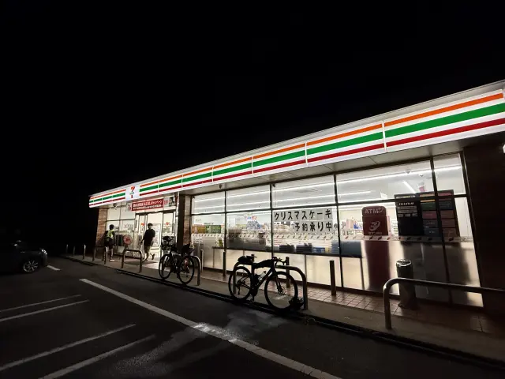
185km地点、燕市内でコースから少し外れて1日目の宿、アパホテル新潟燕三条駅前に21時過ぎに到着。
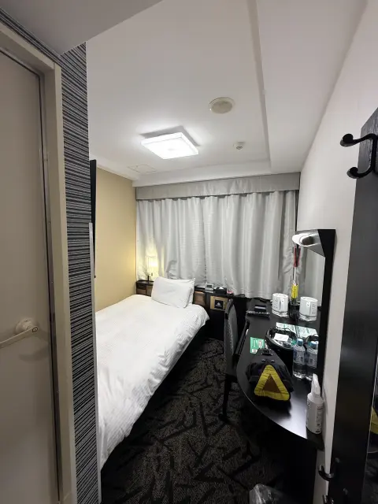
2日目 (185km地点 - 550km地点)
2日目は長めに365kmほど走ってチェックイン時刻が24時の宿を目指す予定だったので、午前4時出発にしたかったのだが、外を見ると雨が本降り。
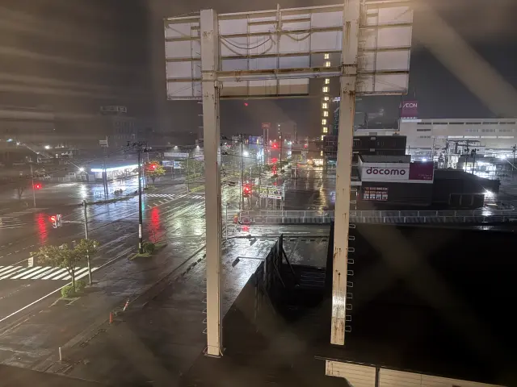
予報を見ると1時間ほどで弱まるとのことだったので、1時間ほど待機して5時に出発。
1時間ほどして新潟市内に入って通過チェックのデイリーヤマザキに到着。
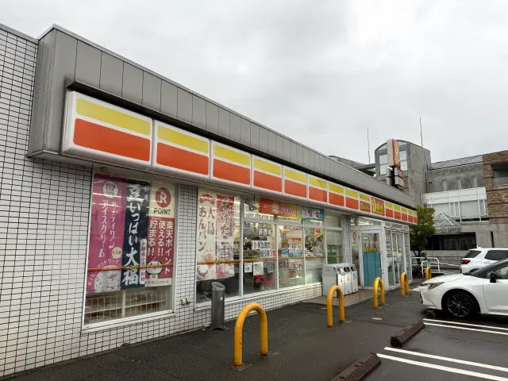
新潟市街地のあとはしばらく若干狭めの県道を進み、胎内市で海沿いの国道113号へ渡って荒川を渡る。
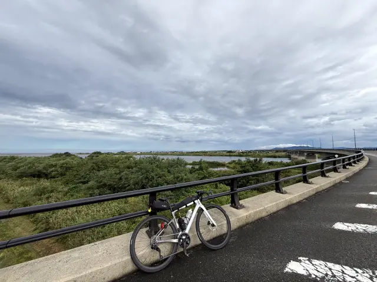
休憩したコンビニでは他の参加者と談笑。
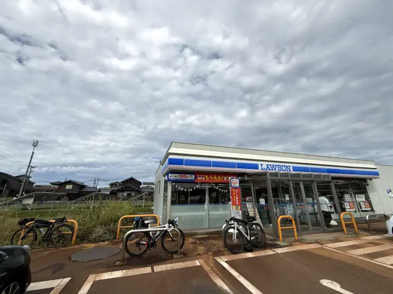
笹川流れ区間では晴れ間も出てきて暑くなってきたが、景色は良かった。
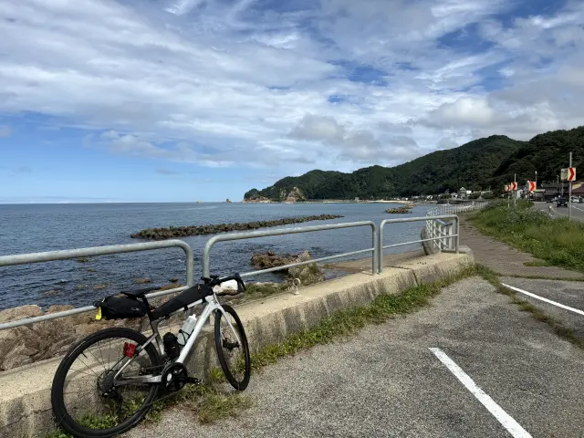 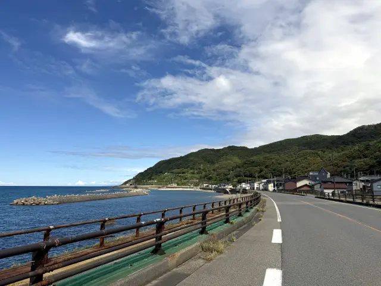
山形県に入って少しして通過チェックに到着。
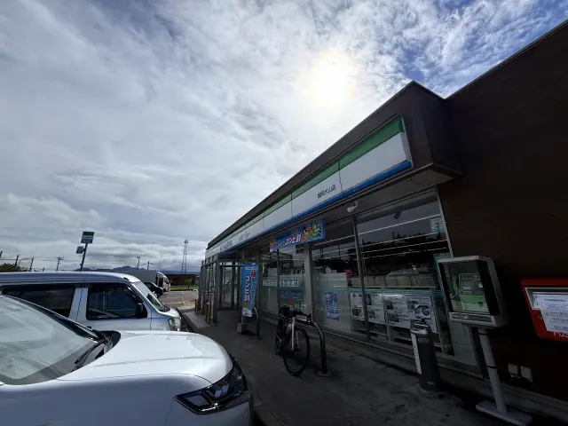
通過チェック後は向きを北から東へ変えて、まずは最上川沿いを遡る。
国道47号に出てしばらく交通量が多い道で必死だったが、多くの車が新しくできた自動車専用道路に流れた後の旧道区間は最上川をゆっくり見ながら走れた。
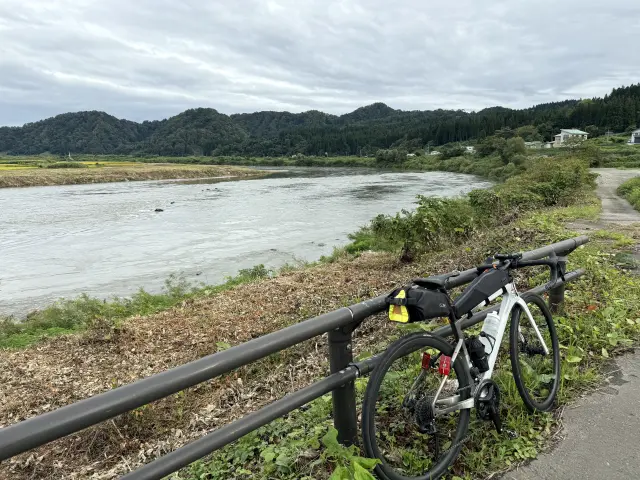
途中尾花沢のコンビニで休憩してから鍋越峠へ。振り返ると夕日がきれいだった。
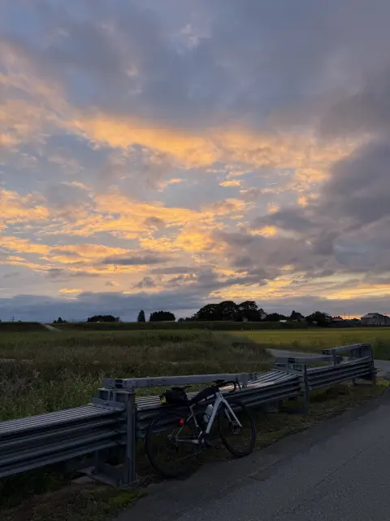
ただ、峠を登ると雨が降り始め、レーダーを見ると宮城県側は雨が降っているようだったので途中のトンネルでレインウェアを着込んでから鍋越峠(トンネル)をクリア。
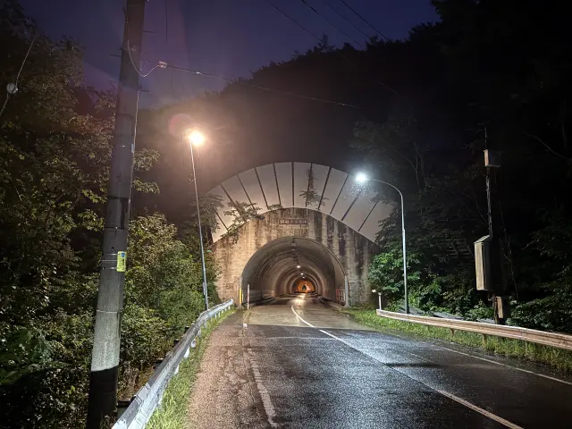
宮城県側は予報通り雨がずっと降っており、山形県側と違って市街地までが遠かった。やっと見つけたコンビニで休憩。
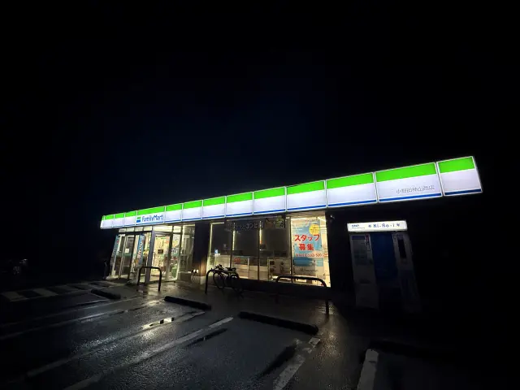
古川市街地で前にいた参加者と合流し、談笑しながら通過チェックへ。
最終的に多賀城のホテルにはチェックイン時刻の1時間前の23時に到着。
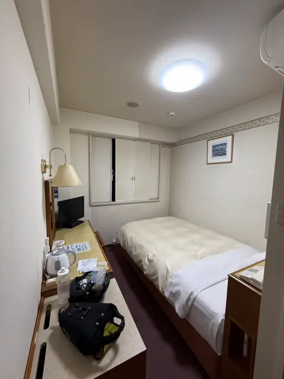
3日目 (550km地点 - 720km地点)
朝はホテルの近くにあった吉野家で。
台風が最接近しているということもあり、雨は本降りのまま。
風は追い風なので覚悟を決めて6時に出発。
7時過ぎにまた別の参加者の方がいたので合流して強風、大雨の中を2人で進む。
9時に通過チェックに到着。
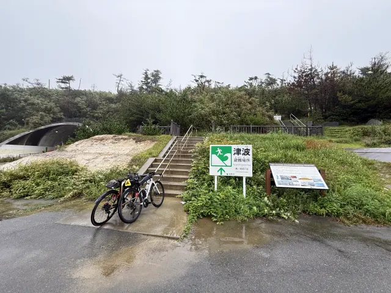
補給が少ない区間だったので途中自販機を見つけたところで休憩したりしつつ、10時にコンビニを見つけたので休憩。
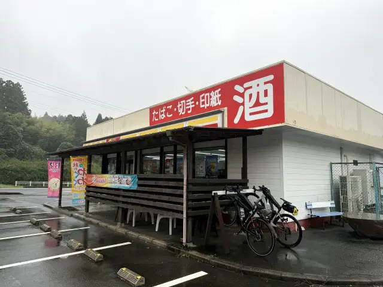
どんどん雨も風も強くなっていく中、ひたすら国道6号を南下し続けたのち、R6から外れて通過チェックへ。
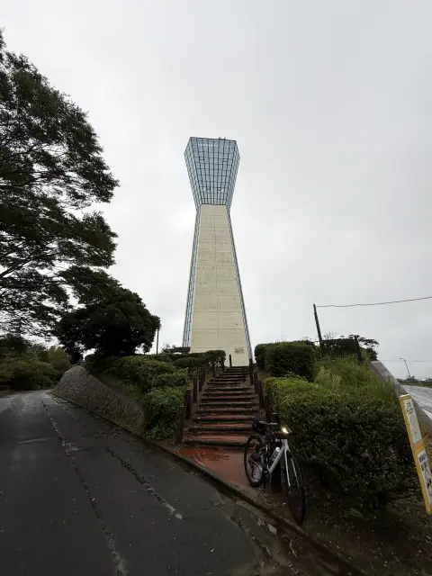
レインウェアは着ていたものの、中までびしょ濡れになってしまい(耐水圧を超えて浸水したのか、それとも汗で内部から結露したのかは不明)、体が冷えてしまった。
さらに濡れで尻の皮膚もダメージを受けたので一旦回復したかった。
私が手が濡れてスマホが操作できないところ、同行者がいわき(泉)のルートインの予約を2部屋分予約してくれた(大変ありがたい)ので、ルートインいわき泉駅前に緊急避難することに。
暴風雨の中15時半に逃げ込んだ。
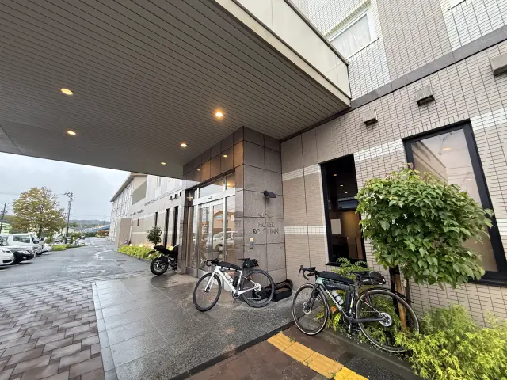
台風特番の予報を見て23時過ぎには雨の範囲から抜けそうな気配。
残り距離(280km)と時間を考えると23時にリスタートすればギリギリゴールには間に合うか、とリタイアするか再出発するか悩みに悩む。
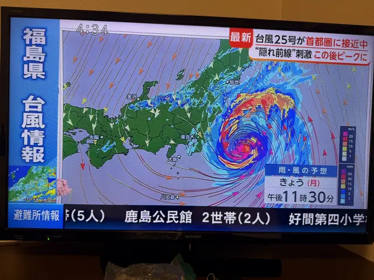
悩みに悩んだ結果、雨は弱まってきたので23時にリスタートすることに。
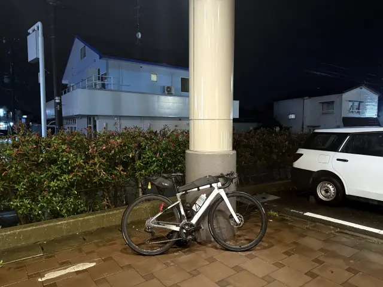
ということでスタートしたのだが、雨は弱まったものの風は強いまま。
しかもこれまでの追い風ではなく、この先は横風や向かい風になる。
夜中の山道を安全にクリアする自信がなかったのでホテルを出て10kmでやっぱりリタイアすることを決断。
ホテルに電話して「戻ってもいい？」と確認するとOKとのことだったので戻る。
今度はぐっすり就寝した。
ということで今回の1000kmはDNFという結果に終わった。
反省としては、これまでは動きやすさ優先であえてゴアテックスではないレインウェアを選んできたのだけど、今回ほどの暴風雨では耐えられなかった可能性がある点と、防寒用にもう1枚ウェアを持っていくべきだった点。
帰宅後に旧ゴアテックス(ePTFE)の自転車用レインウェアがちょうどアウトレット品で出ていたので取り寄せ注文した。